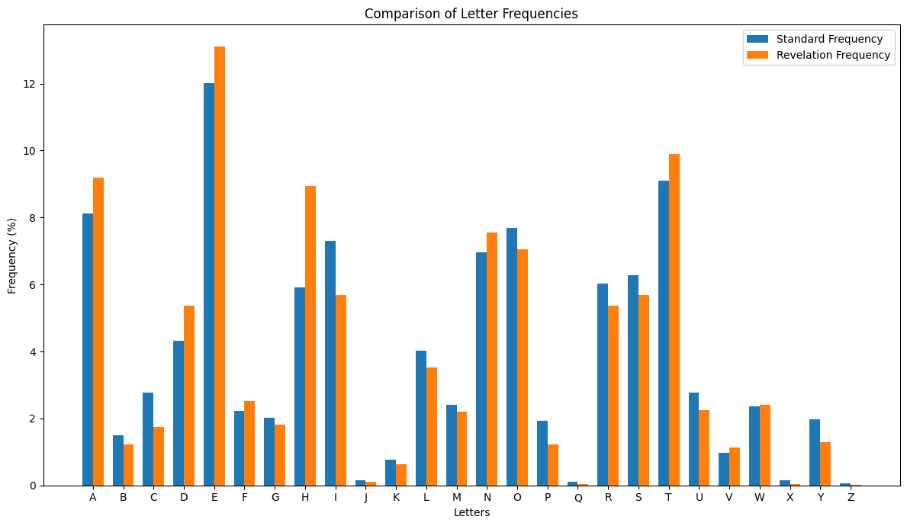
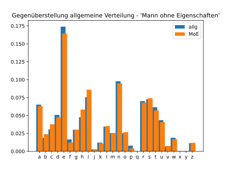
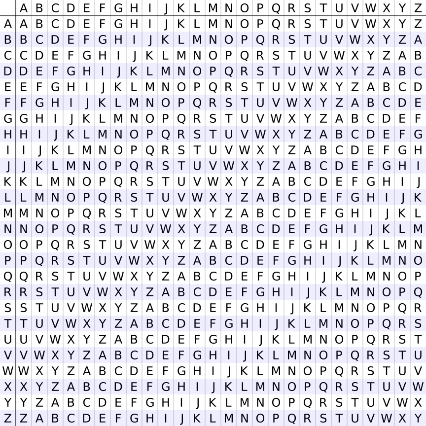
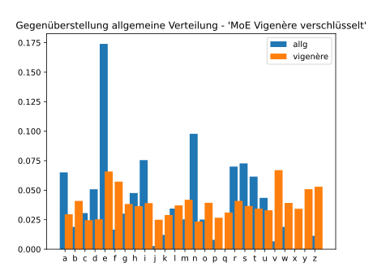

import string
def file_reader(path : str) -> str:
with open(path, mode='r', encoding='utf-8') as f:
text = f.read()
return text
def text_cleaning(text : str) -> str:
clean = text.upper() \
.replace('Ä', 'AE') \
.replace('Ö', 'OE') \
.replace('Ü', 'UE') \
.replace('ß', 'SS') \
.replace(' ', '') \
cleaned_text = ''
for c in clean:
if c.isalpha():
cleaned_text += c
return cleaned_text
def file_writer(path : str, text : str) -> None:
i = 0
grouped_text = ""
for c in text:
i += 1
if i % 50 == 0:
grouped_text += c + "\n"
elif i % 5 == 0:
grouped_text += c + " "
else:
grouped_text += c
with open(path, mode='w', encoding='utf-8') as f:
f.write(grouped_text)
revelation = file_reader('revelation.txt')
cleaned_revelation = text_cleaning(revelation)
file_writer('cleaned_revelation.txt', cleaned_revelation)Weaknesses of Monoalphabetic Ciphers
Vigenère Cipher
As early as the 9th century, the great weakness of monoalphabetic ciphers (Caesar cipher) was recognized in the Islamic world. The distribution of letters follows a specific but constant pattern in every language. As explained in the last section, the letter ‘e’ is by far the most common letter in the English language.
To demonstrate that this applies to any given (longer) texts, the text of the Book of Revelations from the King James Bible was analyzed. The resulting distribution of letters was plotted against the distribution from the table. The result is shown in the figure below.
def letter_frequency(text: str) -> dict:
frequency = {}
total_letters = 0
for char in text:
if char not in frequency:
frequency[char] = 1
else:
frequency[char] += 1
total_letters += 1
for key, value in frequency.items():
frequency[key] = (value / total_letters) * 100
return frequency
frequency_revelation = letter_frequency(cleaned_revelation)
print(frequency_revelation){'T': 9.887444810646103, 'H': 8.931865762908608, 'E': 13.10449184337624, 'R': 5.368654519826711, 'V': 1.1379889310366271, 'L': 3.532118649337728, 'A': 9.193043550359638, 'I': 5.69201749476608, 'O': 7.058018779926621, 'N': 7.5409904027527315, 'F': 2.5288642911925048, 'J': 0.11815185622784652, 'S': 5.683726136434301, 'U': 2.2386667495802497, 'C': 1.7411852496735276, 'W': 2.4065667557987687, 'G': 1.8178803142424809, 'D': 5.3728001989926, 'M': 2.1909914391725223, 'Y': 1.2893062205915884, 'P': 1.2312667122691376, 'B': 1.2126111560226354, 'K': 0.6342889123810708, 'Q': 0.043529631241838194, 'X': 0.03523827291005949, 'Z': 0.008291358331778704}standard_frequency = {
'E': 12.02,
'T': 9.10,
'A': 8.12,
'O': 7.68,
'I': 7.31,
'N': 6.95,
'S': 6.28,
'R': 6.02,
'H': 5.92,
'D': 4.32,
'L': 4.03,
'C': 2.78,
'U': 2.76,
'M': 2.41,
'W': 2.36,
'F': 2.23,
'G': 2.02,
'Y': 1.97,
'P': 1.93,
'B': 1.49,
'V': 0.98,
'K': 0.77,
'J': 0.15,
'X': 0.15,
'Q': 0.10,
'Z': 0.07
}
df = pd.DataFrame.from_dict([standard_frequency, frequency_revelation])
df.index = ['Standard Frequency', 'Revelation Frequency']
dft = df.T
dft = dft.sort_index()
dft['Standard Frequency'] = dft['Standard Frequency'].astype(float)
dft['Revelation Frequency'] = dft['Revelation Frequency'].astype(float)Standard Frequency float64
Revelation Frequency float64
dtype: object# --- Erstellen Sie das Side-by-Side-Balkendiagramm ---
# Legen Sie die Breite der Balken fest
bar_width = 0.35
# Verwenden Sie den Index des transponierten DataFrames (dft)
x = np.arange(len(dft.index))
fig, ax = plt.subplots(figsize=(12, 7))
# Zeichnen Sie die Balken für die beiden Spalten aus dft
ax.bar(x - bar_width/2, dft['Standard Frequency'], bar_width, label='Standard Frequency')
ax.bar(x + bar_width/2, dft['Revelation Frequency'], bar_width, label='Revelation Frequency')
ax.set_xticks(x)
ax.set_xticklabels(dft.index)
ax.set_xlabel('Letters')
ax.set_ylabel('Frequency (%)')
ax.set_title('Comparison of Letter Frequencies')
ax.legend()
plt.tight_layout()
plt.show()

Die Grafik zeigt, dass bei einer Textlänge von 13’343 Buchstaben die Verteilung in einem literarischen Text nahezu identisch ist, mit der allgemeinen Häufigkeitsverteilung in der deutschen Sprache.
Die nächste Grafik zeigt, was mit der Verteilung der Buchstaben geschieht, wenn der gleiche Text mit einer Caesar-Chiffre verschlüsselt worden ist.

Es ist deutlich zu erkennen, dass die Verteilung dem gleichen Muster folgt - verschoben um fünf Positionen. Diese Auswertung ermöglicht die Entschlüsselung des Textes, ohne alle möglichen Schlüsselalphabete durchzuprobieren.
Vigenère Chiffre
Bei der Vigenère Chiffre handelt es sich um eine polyalphabetische Chiffre. Das Verfahren ist nach Blaise de Vigenère (1523 - 1596) benannt. polyalphabetisch heisst, dass zur Verschlüsselung nicht eine Verschiebung vorgenommen wird sondern - nach jedem Buchstaben wechselnd - mehrere Verschiebungen vorgenommen werden.
Um das zu erreichen, verwendet man ein sogenanntes Vigenère-Quadrat wie unten abgebildet.

Für die Verschlüsselung eines Klartextes braucht das Vigenère Verfahren ein Schlüsselwort. Das Schlüsselwort sollte möglichst lang sein. Das folgende Beispiel soll zeigen, wie das Vigenère Verfahren funktioniert. Der zu verschlüsselnde Klartext lautet ‘Kryptologie ist spannend’ und der Schlüssel ‘Buelrain’. Als Hilfestellung werden Text und Schlüssel in einer Tabelle dargestellt.
kryptologieistspannend
buelrainbuelrainbuelraDer Schlüssel wir dabei ohne Wortabstand so oft wiederholt, bis die Buchstabenfolge des Schlüssels gleich lang ist, wie die Buchstabenfolge, welche zu verschlüsseln ist.
Als nächstes wird der zu verschlüsselnde Buchstabe in der Kopfzeile des Vigenère Quadrates gesucht. Damit wird die Spalte mit dem verschobenen Alphabet identifiziert. Der chiffrierte Buchstaben ergibt sich, indem in der Spalte mit den Zeilenköpfen der unter dem zu chiffrierenden Buchstaben befindliche Buchstabe des Schlüssels gesucht wird. Der Schnittpunkt der Zeile mit der vorher gefundenen Spalte entspricht dem chiffrierten Buchstaben.
kryptologieistspannend
buelrainbuelrainbuelra
LLCAKOTBHCITJTACBHRPEDAlternativ kann eine Verschlüsselung mit der Vigenère Chiffre auch mit modularer Arithmetik umgesetzt werde. Dazu wird jedem Buchstaben ein Zahlenwert nach dem Muster \(a = 0, b = 1, ... , z = 25\) zugewiesen. Die Verschlüsselung erfolgt anschliessend nach der ‘Formel’ \(C_i = (P_i + K_i) mod 26\) Wobei die Buchstaben \(C\) für den chiffrierten Text, \(P\) für den Klartext (Englisch plain text) und \(K\) für den Schlüssel (Englisch key) stehen. Der Index \(_i\) steht für den \(i\)-ten Buchstaben in der Textfolge.
Das obige Beispiel stellt sich dann folgendermassen dar:
k r y p t o l o g i e i s t s p a n n e n d
10 17 24 15 19 14 11 14 06 08 04 08 18 19 18 15 00 13 13 04 13 03
b u e l r a i n b u e l r a i n b u e l r a
01 20 04 11 17 00 08 13 01 20 04 11 17 00 08 13 01 20 04 11 17 00
11 37 28 26 36 14 19 27 07 28 08 19 35 19 26 28 01 33 17 15 30 03
11 11 02 00 10 14 19 01 07 02 08 19 09 19 00 02 01 07 17 15 04 03
L L C A K O T B H C I T J T A C B H R P E DFür die Entschlüsselung wird die ‘Formel’ folgendermassen umgekehrt: \(P_i = (C_i - K_i + 26) mod 26\). Die Addition von 26 in der Klammer erfolgt, um negative Zahlen zu vermeiden.
Wie sich die Vigenère Verschlüsselung auf die Verteilung der Buchstaben auswirkt, kann untenstehender Grafik entnommen werden.

Wie unschwer zu erkennen ist, stellt sich die Verteilung der Buchstaben in einem polyalphabetisch verschlüsselten Text deutlich anders dar, als dies in normalen Text der Fall ist. Die Vigenère Chiffre galt daher während ungefähr 300 Jahren als ‘la chiffre indéchiffrable’.
Ein Spezialfall der Vigenère Chiffre ist tatsächlich nicht zu entschlüsseln. Das ist dann der Fall, wenn der Schlüssel länger ist als der Klartext. Man spricht in diesem Fall vom One-Time Pad.